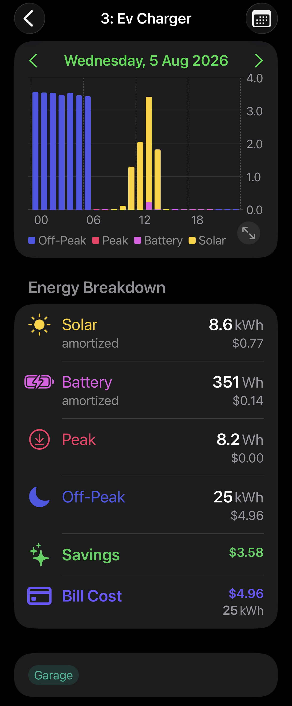
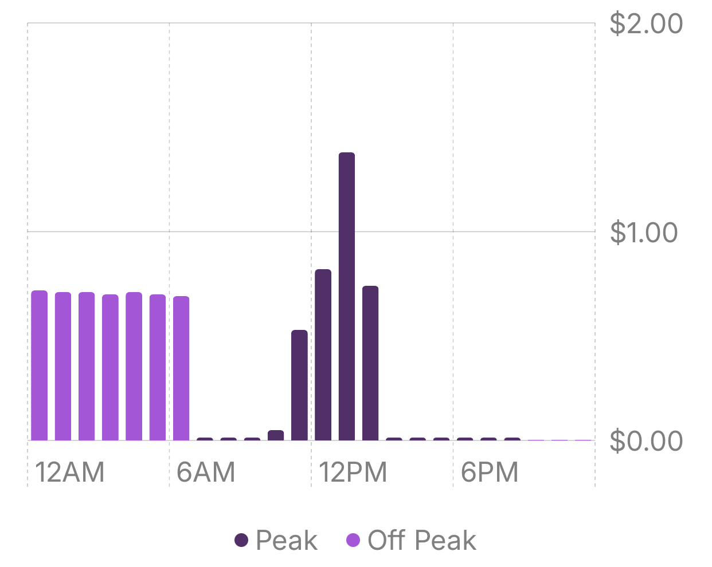
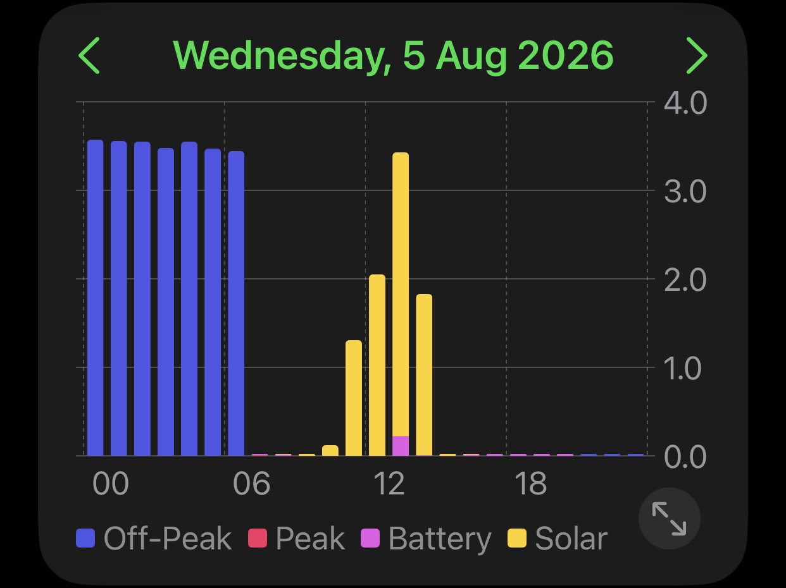

Solar usually isn't allocated per circuit
Unless your solar is wired to its own sub-circuit, your panels feed the whole house at once — so the switchboard allocates every kilowatt-hour to grid usage at your plan's time-of-use rates, as if it had all been imported.
Solar and battery, allocated in proportion
For every interval of the day, Corrente works out how much of the home's total load your own generation covered, then gives each circuit that same share, weighted by what the circuit actually drew. A circuit pulling a third of the load at midday gets a third of the solar.
Every source, not just the tariff
Each interval is split by source, not just by time of day. The chart shows it directly: grid when you're importing, solar when the roof is carrying the load, battery when it's coming out of storage.
The amortised cost of solar and battery
Corrente lets you enter your own amortised cost per kWh for solar and battery, calculated however you like — for example, install cost (plus a replacement inverter, since they typically only last around 10 years) divided by expected generation over a 20-year lifespan. That gives an honest running cost instead of treating self-generated energy as free.
Estimated bill cost and savings, per circuit
Bill Cost is what your retailer will actually charge for that circuit — only the kWh that came from the grid, at your plan's own peak, shoulder, and off-peak rates. Savings is what you avoided paying by running on your own generation instead. Together they tell you what a circuit costs and what your system is doing for it.
A day on one circuit
The screen alongside is a single circuit — an EV charger — on Wednesday 5 August. It charges overnight on off-peak grid power, then tops up again around midday while solar is generating.
25 kWh of off-peak grid at $4.96, 8.6 kWh of solar amortised at $0.77, and 351 Wh of battery at $0.14 — a bill cost of $4.96 and $3.58 saved.
Hot water, heat pump, oven, lighting
The same allocation runs across every circuit you have, over any period — day, week, month, or year. It's what makes it possible to say which appliance is genuinely expensive to run in your house, and which one your solar is already paying for.

What per-circuit allocation adds
Basis generates per-circuit measurement. Corrente adds your solar, battery, and retail plan on top of it — two views of the same day, answering two different questions.

Every hour the circuit ran, priced against the grid tariff in force at the time. Total for the day: $8.55 — the right answer to "what would this have cost from the grid?", but it can't correctly allocate solar generation unless solar is wired to its own circuit.

The same day with your own generation accounted for. Corrente splits that $8.55 into $4.96 you'll actually be billed and $3.58 your solar and battery covered.
Figures from a real day on a Basis switchboard with rooftop solar and a home battery. Corrente is an independent app built on the Basis platform.
See it on your own switchboard
Connect your Basis system and your solar, and every circuit in your home gets the same treatment. Free in the TestFlight beta.